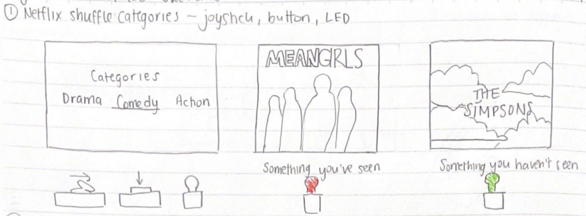
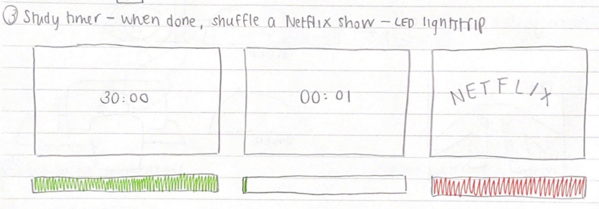
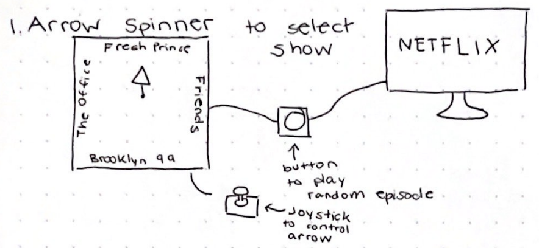
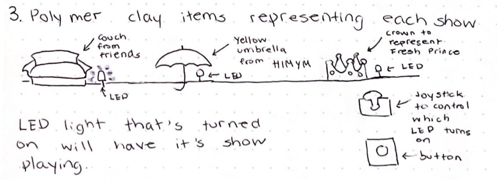

This first sketch expands on the idea of choosing a random tv show and allows for choosing random food/movies/tv shows/twitch streams so that the problem space becomes “What decision do I want to make about these specific things?”

Refined Sketch 2 by Marela
This second sketch expands on our idea by way of choosing tv shows by genre through controller interaction, choosing via button clicks, and indicating whether you’ve seen the tv show before through a red or green light. This allows the user the ability
to choose what they’d prefer to watch seamlessly.

Refined Sketch 3 by Marela
This third sketch implements the show playing aspect of our original idea as a reward for studying. A timer is set to study. Which the arduino tracks. Once the timer is done the arduino will play a tv show on netflix as a reward and break for studying.

Refined Sketch 4 by Sophia
This fourth sketch implements the random spinner and uses it as a visual cue that allows the user to choose which show to play random episodes of.

Refined Sketch 5 by Sophia
This fifth sketch shows different physical polymer clay items that represent the different shows that can be played. When selecting and playing a show to play, the corresponding light will be on to indicate which show is currently on.